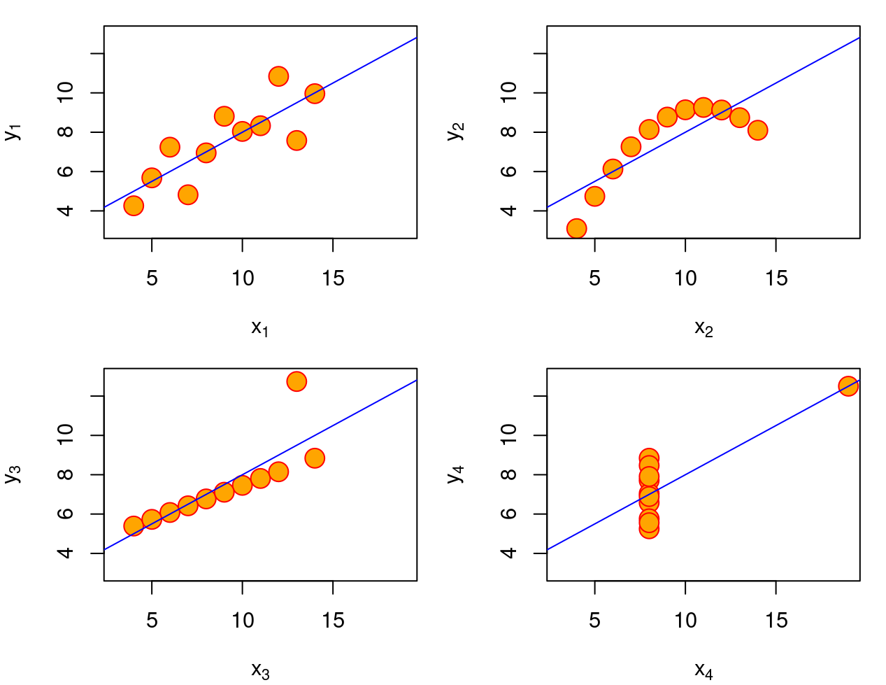
그림이 무엇을 계산해 그렸는지 꺼내서 대조하기
충남대학교 정보통계학과
2026-10-19
그림 코드는 틀려도 오류 없이 실행될 수 있음: 그림이 무엇을 계산해 그렸는지 꺼내서 대조
| 절 | 내용 | 자료 | |
|---|---|---|---|
| 1 | 그림으로 자료 보기 | 요약 통계량이 같은 네 자료, 두 그림 체계 | anscombe, cars |
| 2 | 기본 그래픽: 고수준 함수 | plot(), hist(), barplot(), boxplot(), 모자이크 그림 | mtcars, UCB 입학 |
| 3 | 덧그리기와 그래픽 상태 | 저수준 함수, 영역과 칸 나누기, par() 되돌리기 | mtcars |
| 4 | ggplot2 의 문법 | 매핑과 설정, group 과 선의 순서 | ToothGrowth, Gapminder |
| 5 | geom 과 stat | 그림이 계산한 값, layer_data() | mpg, diamonds |
| 6 | 위치 조정 | 쌓기, 나란히, 겹치기, 흩뜨리기 | diamonds, iris |
| 7 | 척도, 좌표, 글자 | ylim() 과 coord_cartesian(), 로그 축, 점 크기 | mpg, Gapminder |
| 8 | 나누어 그리기, 배치, 테마, 저장 | facet, patchwork, theme(), ggsave() | economics_long |
| 9 | 그림 검증하기 | 확인 절차, 글자와 코드 대조, 통합 사례 | Gapminder |
| 10 | AI와 함께 | 거품 그림 코드의 검증 | Gapminder |
자료를 몇 개의 수로 줄일 때 빠지는 것 확인하기
R 의 두 그림 체계와 그림이 그려지는 곳
이 절에서
이 절이 답하는 질문: 요약 통계량이 같으면 그림도 같은가?
Anscombe 의 네 쌍: 요약 통계량과 기울기가 소수 둘째 자리까지 같음. 네 쌍의 산점도도 비슷할까?
쌍1 쌍2 쌍3 쌍4
x평균 9.00 9.00 9.00 9.00
y평균 7.50 7.50 7.50 7.50
x표준편차 3.32 3.32 3.32 3.32
y표준편차 2.03 2.03 2.03 2.03
상관 0.82 0.82 0.82 0.82
기울기 0.50 0.50 0.50 0.50A 네 그림 모두 비슷
B 흩어진 정도만 조금씩 다름
C 점이 놓인 모양이 서로 다름
상관계수와 회귀직선은 x 와 y 가 직선 관계라고 보고 계산한 값

정답은 C: 네 그림이 서로 다름
상관계수와 회귀직선은 직선이라는 가정 아래의 값: 가정이 맞는지는 그림으로 확인
예측: p 에는 무엇이 담길까
| 기본 그래픽 | ggplot2 | |
|---|---|---|
| 그리는 방식 | 부를 때마다 장치에 차례로 덧그림 | 자료, 매핑, 레이어를 + 로 더한 객체 |
| 설정 | par(): 장치에 남음 (3절) | 객체 안의 테마 (8절) |
| 계산한 값 확인 | hist(x, plot = FALSE) 같은 반환값 | layer_data() (5절) |
그래픽 장치: 그림이 그려지는 곳
부를 때마다 새 그림을 시작하고 축과 눈금까지 그리는 함수
히스토그램 막대 높이와 수염 끝은 함수가 계산한 값
이 절에서
이 절이 답하는 질문: 막대 높이와 수염 끝은 자료의 어느 값인가?
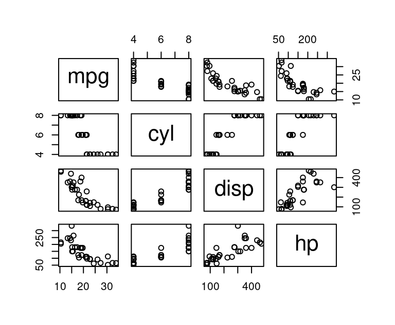
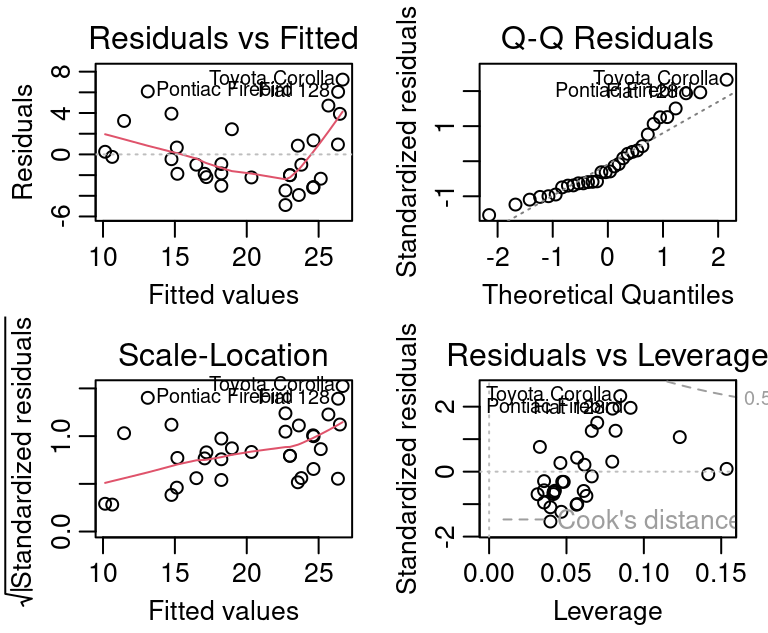
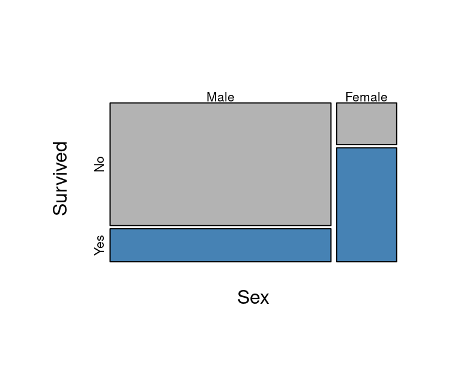
데이터 프레임: 산점도 행렬
회귀모형: 진단 그림 네 장
교차표: 모자이크 그림 (2.4)
x <- c(1, 2, 2, 1, 3, 3, 1, 5) 일 때 hist(x) 와 barplot(x) 의 막대는 각각 몇 개이고 높이는?
A 둘 다 4개: 값 1, 2, 3, 5 의 개수 3, 2, 2, 1
B hist() 4개(높이 5, 2, 0, 1), barplot() 8개
C hist() 4개(높이 3, 2, 2, 1), barplot() 4개
hist() 의 첫 구간 [1, 2] 는 양 끝을 모두 포함
정답은 B
breaks 에 준 수 하나는 제안
막대 높이는 hist() 가 구간마다 센 값: 반환값으로 꺼내 대조
위 수염 끝은 항상 max(x) 일까? x 에 값 5 하나를 더한 x2 의 상자그림에서 위 수염 끝과 5 는?
A 위 수염 끝이 5 까지 늘어남
B 위 수염 끝은 2.206 그대로, 5 는 따로 찍힌 점
C 상자와 수염이 모두 오른쪽으로 길어짐
수염은 상자 끝에서 상자 길이의 1.5배 안에 있는 관측값 가운데 가장 먼 값까지
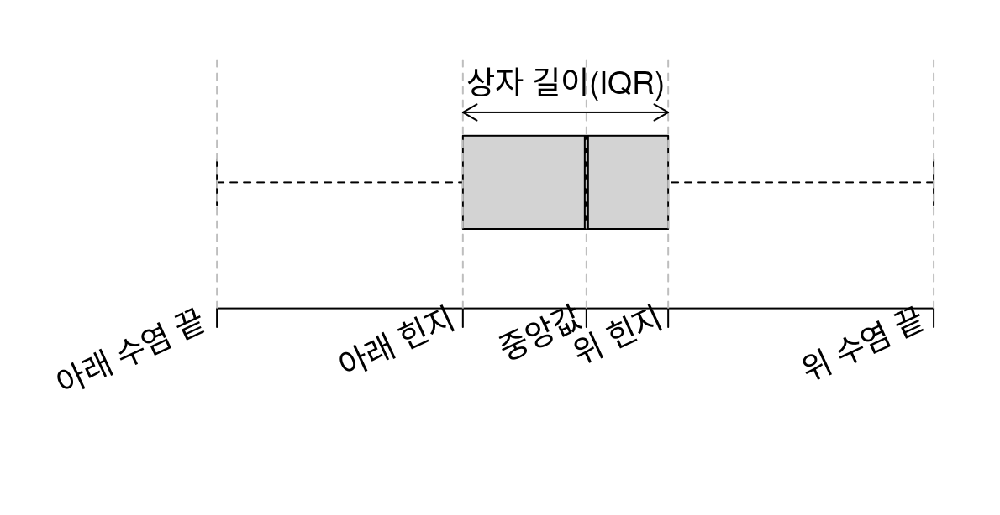
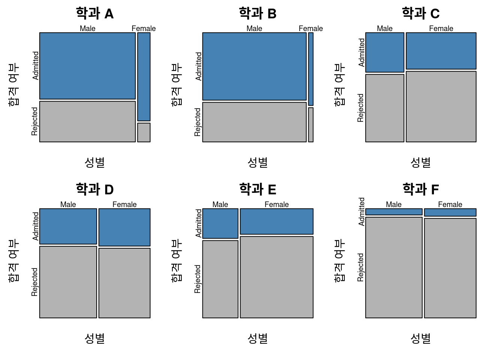
UC Berkeley 1973년 대학원 지원자 4,526명
Dept
Gender A B C D E F
Male 0.62 0.63 0.37 0.33 0.28 0.06
Female 0.82 0.68 0.34 0.35 0.24 0.07합치면 비교의 방향이 뒤집힘: 심슨의 역설
고수준 함수가 정한 좌표 위에 점, 선, 글자를 더하기
par() 로 바꾼 설정은 장치에 남음
이 절에서
이 절이 답하는 질문: 같은 코드가 왜 한 번은 그려지고 한 번은 오류인가?
회귀직선, 연비 평균의 가로선, 마력 평균의 세로선: 세 직선은 한 점에서 만날까?
m <- lm(mpg ~ hp, data = mtcars) # 단순 선형회귀: 연비를 마력으로
plot(mpg ~ hp, data = mtcars, type = "n") # 축과 좌표만 정한 빈 판
points(mtcars$hp, mtcars$mpg, pch = 16)
abline(m, col = "red") # 회귀직선
abline(h = mean(mtcars$mpg), lty = 2) # 연비 평균
abline(v = mean(mtcars$hp), lty = 2) # 마력 평균A 만나지 않음: 교점이 세 개
B 이 자료에서는 우연히 한 점에서 만남
C 어느 자료든 한 점에서 만남
최소제곱 회귀직선의 절편을 구하는 식을 떠올리기
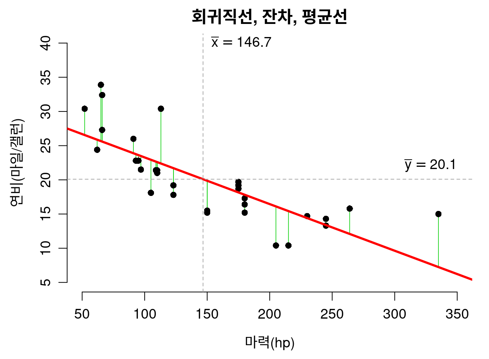
정답은 C
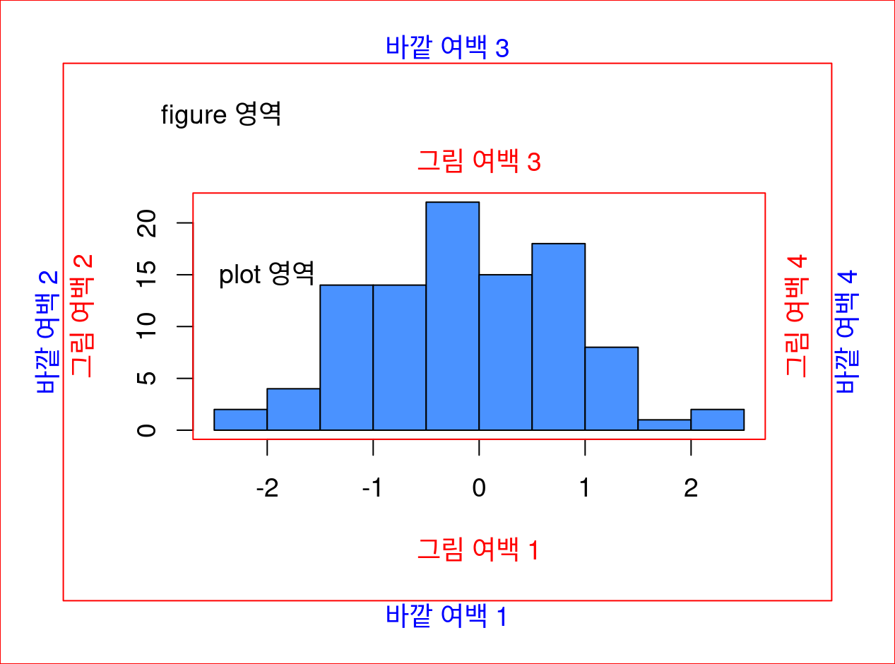
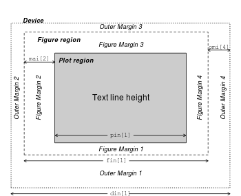
mai 그림 여백, pin plot 영역, fin figure 영역, din 장치 (인치)
이전 판 강의노트의 코드: 위쪽 제목은 “mfrow = c(2, 3)”. 그림은 몇 행 몇 열일까?
par(oma = c(0, 0, 3, 0), mfrow = c(3, 2))
for (i in 1:6) {
set.seed(12345)
plot(rnorm(20), rnorm(20), main = paste("Plot", i))
box("figure")
}
mtext(side = 3, line = 1, cex = 0.8, col = "blue",
"Multiple plots with mfrow = c(2, 3)", outer = TRUE)A 2행 3열
B 3행 2열
C 6행 1열
제목은 사람이 적은 문자열, 칸 나누기는 인수가 정함
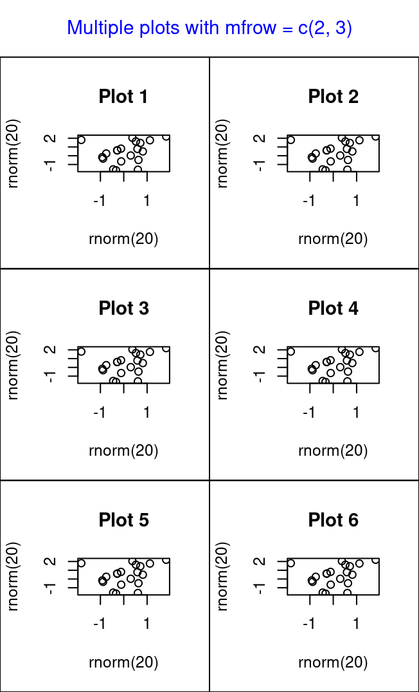
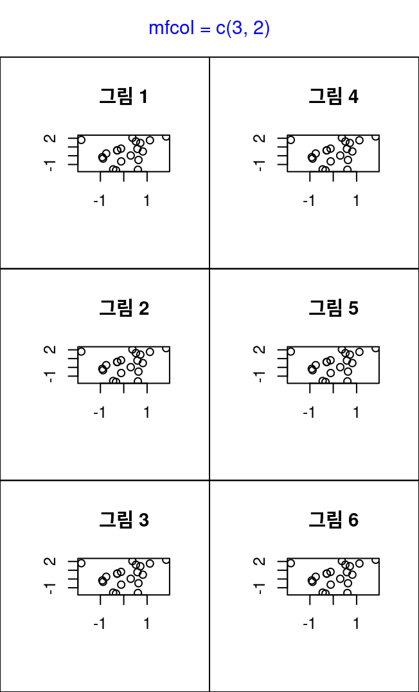
정답은 B: 3행 2열
이 코드의 문제 하나 더: 바꾼 oma 와 mfrow 를 되돌리지 않음 (3.3)
예측: 6칸으로 나눈 장치에서 이어서 pin = c(5, 2) 를 주면?
화이트보드를 칸으로 나누고 선을 지우지 않으면 다음 사람도 그 칸에 씀
op <- par(mfrow = c(1, 2)) # 바꾸기 전 값이 op 에
hist(x); plot(x, y)
par(op) # 되돌리기
plot_two <- function(x, y) {
op <- par(mfrow = c(1, 2))
on.exit(par(op)) # 오류로 끝나도 실행
hist(x); plot(x, y)
}그림 하나를 자료, 매핑, geom 같은 부품의 조합으로 적기
그리기 전에 열과 그림 속성의 대응을 명세
이 절에서
이 절이 답하는 질문: 그림의 각 속성은 자료의 어느 열에서 왔는가?
기본 그래픽: OJ 선을 그리고 VC 선을 덧그림
첫 plot() 이 y 축 범위를 OJ 값으로 정하고 lines() 는 범위를 바꾸지 않음: VC 0.5 mg 평균 7.98 이 잘림, x 축은 용량이 아니라 1, 2, 3
성적표의 학생 한 명이 점 하나: 키는 가로 위치, 체질량지수는 세로 위치, 성별은 점의 색
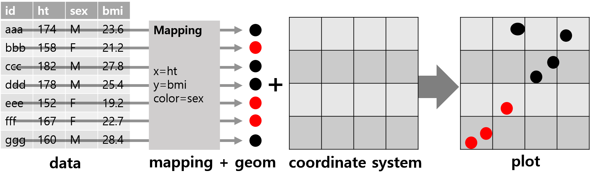
셋째 줄의 점은 무슨 색이고, 범례에는 무엇이 적힐까?
ggplot(mpg, aes(class)) + geom_bar(fill = "navy") # 모든 막대가 남색
ggplot(mpg, aes(class)) + geom_bar(aes(fill = fl)) # 연료별 색과 범례
ggplot(mtcars, aes(wt, mpg)) + geom_point(aes(colour = "blue"))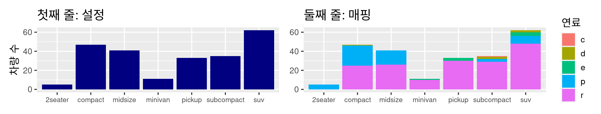
A 파란 점, 범례 없음
B 붉은 점, 범례 항목 ‘blue’
C 오류: “blue” 는 열 이름이 아님
aes() 안에 적은 것은 척도를 거쳐 색이 됨
정답은 B
| 매핑 | 설정 | |
|---|---|---|
| 쓰는 곳 | aes() 안, 열 이름 | geom 인수, 값 |
| 값 | 행마다 다름, 척도를 거침 | 모든 행에 같은 값 |
| 범례 | 만듦 | 만들지 않음 |
선 굵기는 linewidth: ggplot2 3.4.0 부터
size aesthetic for lines was deprecated in ggplot2 3.4.0.”아시아 50개 나라의 2000~2020년 기대수명을 아래 코드로 그리면 어떤 모양일까?
asia <- filter(gm, continent == "아시아") # 50개 나라 x 21년 = 1,050행
asia |> arrange(year) |> select(name, year, life_expectancy) |>
head(3) |> as.data.frame()
name year life_expectancy
1 Afghanistan 2000 54.63
2 Armenia 2000 72.35
3 Azerbaijan 2000 66.80
ggplot(asia, aes(year, life_expectancy)) + geom_line()A 나라마다 선 하나, 모두 50개
B 같은 해의 값 50개를 위아래로 오가는 선 하나
C 연도별 평균을 이은 선 하나
색이나 group 으로 집단을 나누지 않은 geom_line() 은 선을 몇 개 그릴까?
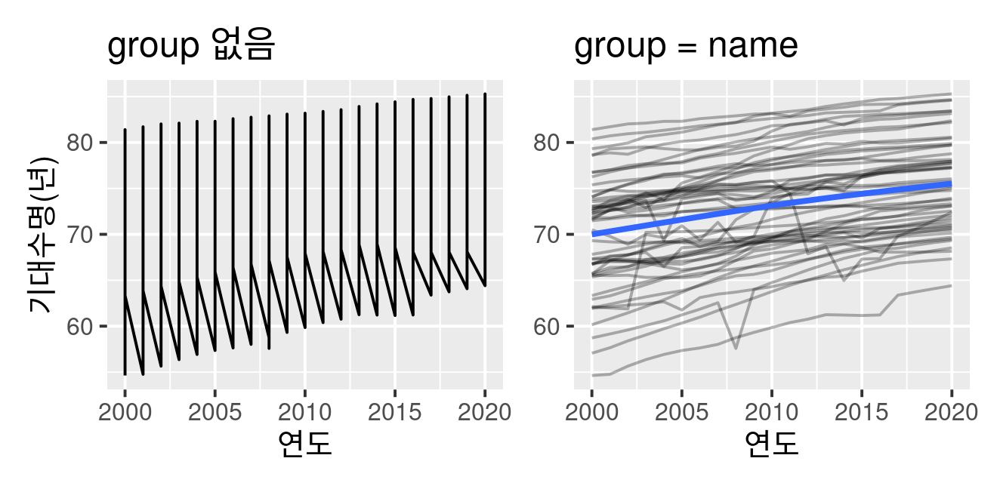
정답은 B
geom_line() 과 geom_path()
레이어는 geom(그리는 모양)과 stat(그리기 전 계산)의 짝
layer_data() 로 계산한 표를 꺼내 직접 계산한 값과 대조
이 절에서
이 절이 답하는 질문: 막대 높이는 누가 계산했는가?
예측: y 를 주지 않은 geom_bar() 의 막대 높이는?
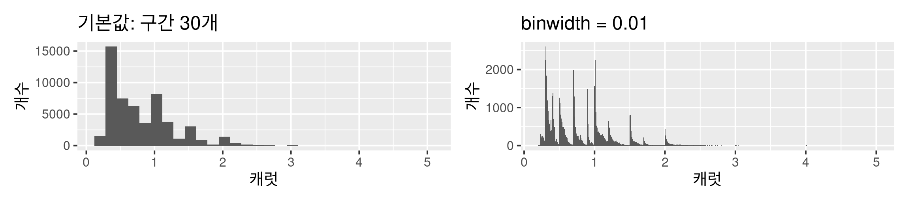
mpg 의 suv 62대 가운데 시내 연비 19 인 차 한 대: 두 체계의 상자그림에서 같은 곳(수염 끝 또는 점)에 그려질까?
suv <- filter(mpg, class == "suv")
boxplot(suv$cty) # 기본 그래픽: 상자는 fivenum() 의 힌지
ggplot(suv, aes(y = cty)) + geom_boxplot() # ggplot2: 상자는 quantile()
sort(suv$cty, decreasing = TRUE)[1:4] # 20 20 19 18A 둘 다 수염 끝
B 둘 다 따로 찍힌 점
C 기본 그래픽은 수염 끝, ggplot2 는 점
상자 경계가 다르면 수염 한계(상자 끝 + 1.5 × 상자 길이)도 다름
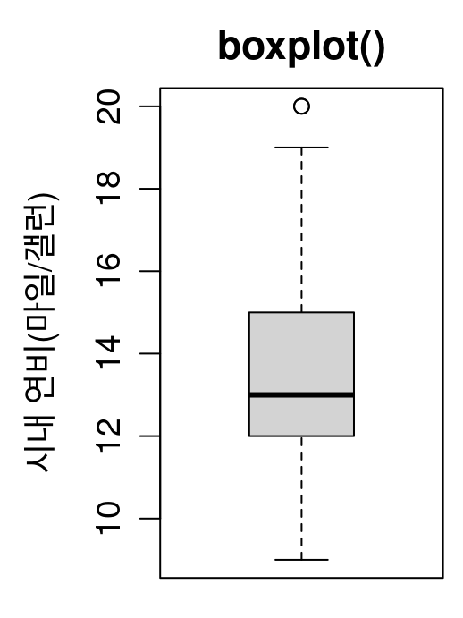
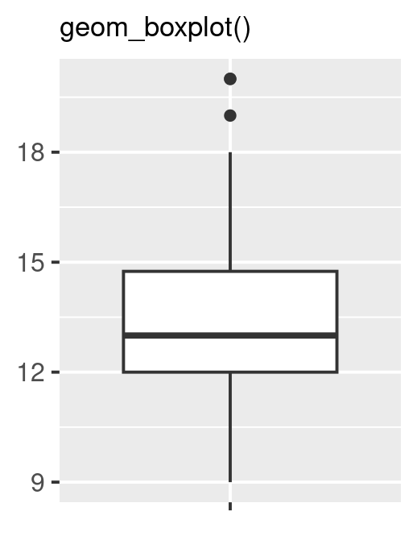
| 위 경계 | 수염 한계 | 연비 19 | |
|---|---|---|---|
| boxplot() | 힌지 15 | 15 + 1.5 × 3 = 19.5 | 수염 끝 |
| geom_boxplot() | 3사분위수 14.75 | 14.75 + 1.5 × 2.75 = 18.875 | 점 |
정답은 C: 상자그림의 점을 근거로 말할 때는 어느 함수로 그렸는지 함께
봉우리 둘, 정규, 균일: 이전 판의 모의 자료
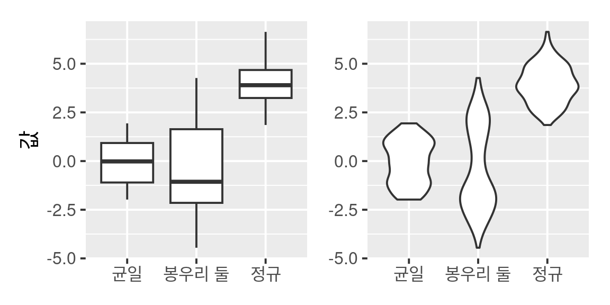
method 를 주지 않은 geom_smooth()
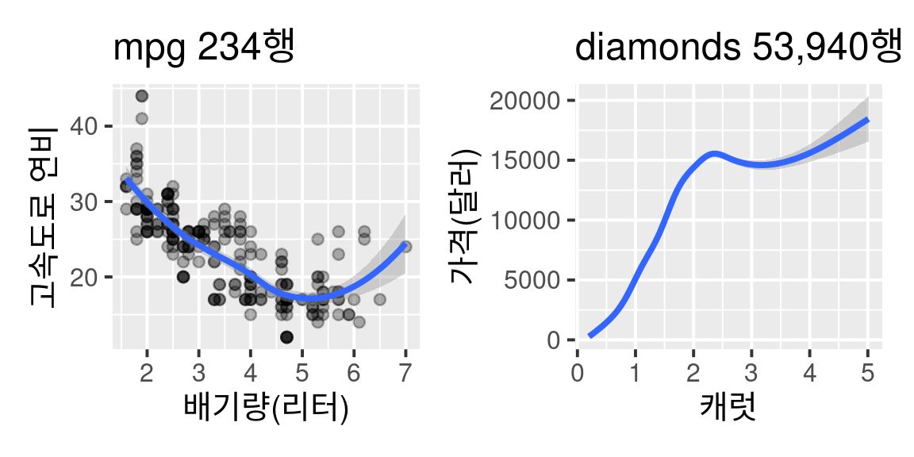
컷 5가지와 색 7가지 조합의 캐럿 평균과 95% 신뢰구간: 오차 막대에만 position_dodge(0.8) 을 주면 점은 어디에?
p_err <- ggplot(carat_summ, aes(x = cut, y = mean, colour = color))
p_err +
geom_errorbar(aes(ymin = lcl, ymax = ucl), width = 0.1,
position = position_dodge(0.8)) + # 오차 막대에만
geom_line(aes(group = color)) +
geom_point(size = 2)A 자기 오차 막대 위
B 컷의 가운데에 모임
C 오차 막대를 따라 같이 비킴
위치 조정은 레이어마다 따로 정함
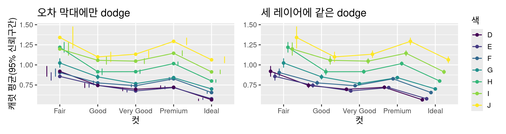
통계량을 계산한 뒤 그림 요소를 놓을 자리를 정하는 단계
같은 막대라도 놓는 자리에 따라 꼭대기가 나타내는 값이 바뀜
이 절에서
이 절이 답하는 질문: 막대 꼭대기는 무엇의 값인가?
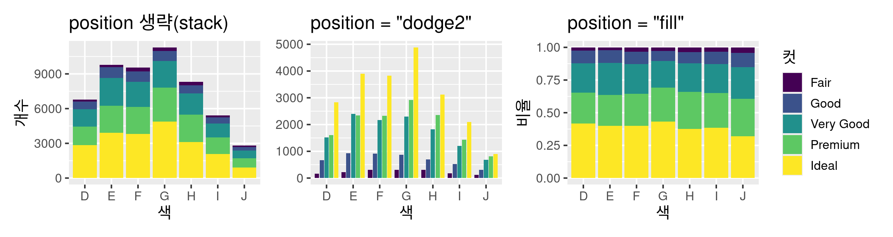
붓꽃 세 종의 꽃잎 길이 히스토그램: 막대는 겹칠까, 쌓일까? y 를 밀도로 바꾸면 막대 넓이의 합은?
sapply(split(iris$Petal.Length, iris$Species), range) # 종별 범위(cm)
setosa versicolor virginica
[1,] 1.0 3.0 4.5
[2,] 1.9 5.1 6.9
ggplot(iris, aes(Petal.Length, fill = Species)) +
geom_histogram(bins = 20, alpha = 0.2) +
labs(title = "Overlaying multiple histograms") # 이전 판의 제목
# 밀도: geom_histogram(aes(y = after_stat(density)), bins = 20, alpha = 0.2)A 겹침, 넓이 합 1
B 쌓임, 넓이 합 3
C 겹침, 넓이 합 3
alpha 는 투명도일 뿐, 놓는 자리는 position 이 정함
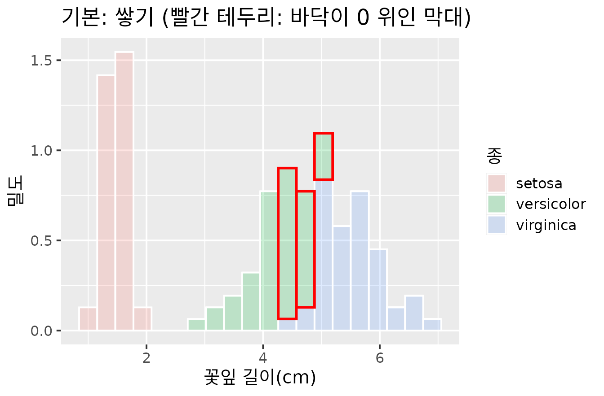
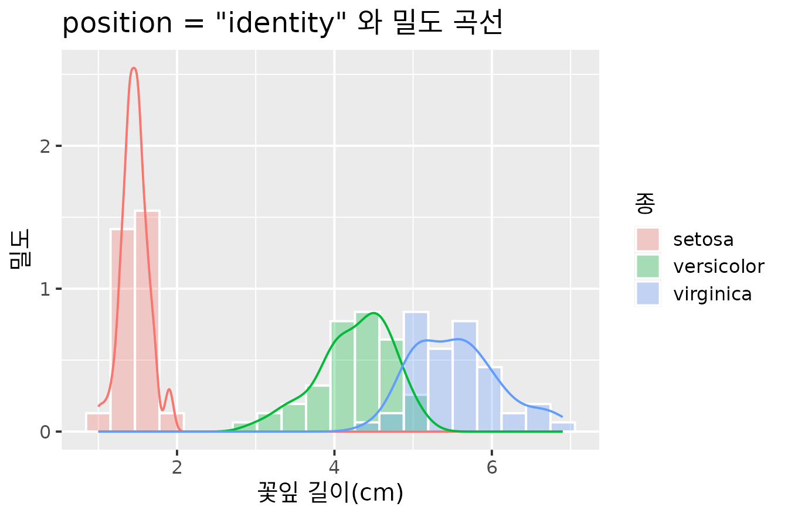
정답은 B
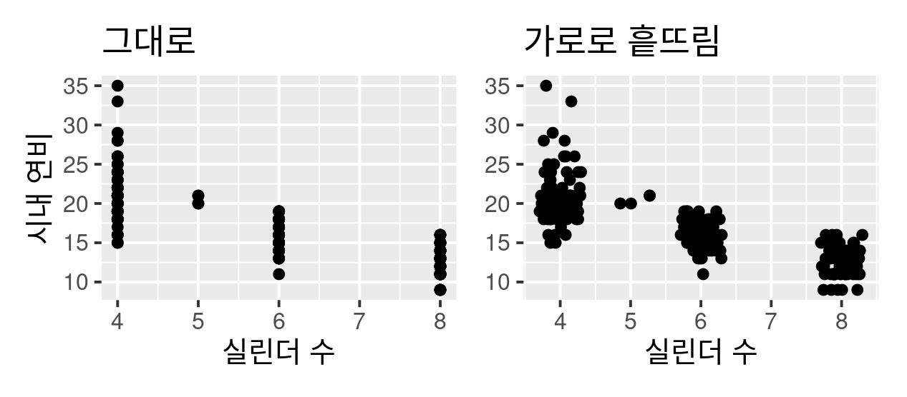
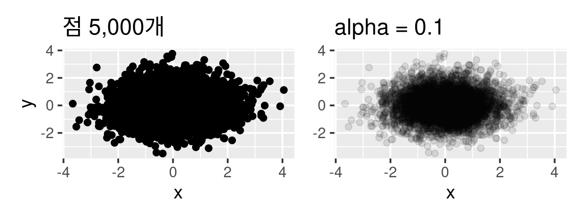
예측: 234대의 점이 몇 개로 보일까
척도는 자료의 값을 위치, 크기, 색으로 바꾸는 규칙
좌표계는 계산한 그림의 보이는 범위를 정함
이 절에서
이 절이 답하는 질문: 축을 좁히면 통계량이 바뀌는가?
차급별 고속도로 연비 상자그림: ylim(15, 30) 을 더한 그림과 coord_cartesian(ylim = c(15, 30)) 을 더한 그림의 중앙값은 같을까?
p_hwy <- ggplot(mpg, aes(class, hwy)) + geom_boxplot()
p_hwy + ylim(15, 30) # 척도 한계
p_hwy + coord_cartesian(ylim = c(15, 30)) # 좌표 확대A 세 그림의 중앙값이 모두 같음
B ylim() 그림에서 일부 차급의 중앙값이 바뀜
C coord_cartesian() 그림에서 일부 차급의 중앙값이 바뀜
단체 사진의 가운데를 확대해 보기와 가장자리를 잘라 내고 남은 사람으로 평균 키 다시 내기
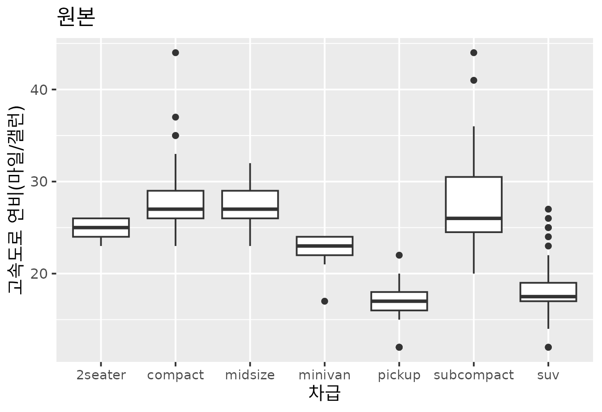
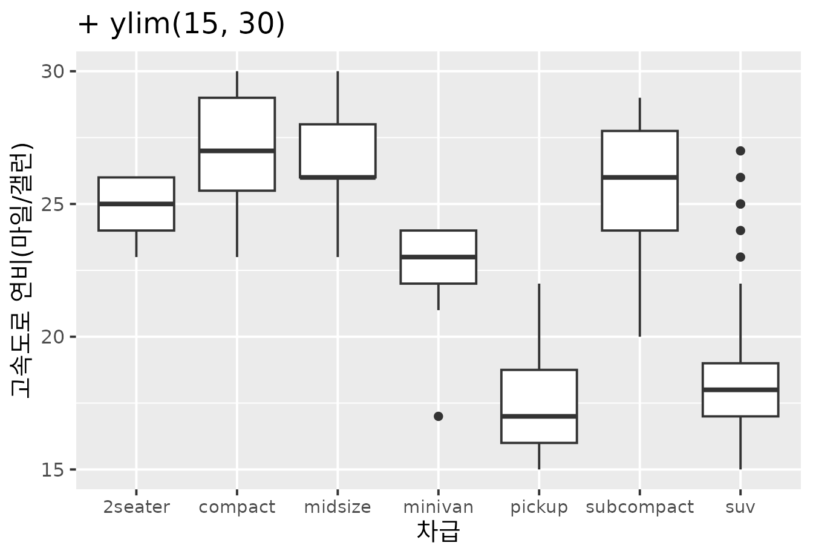
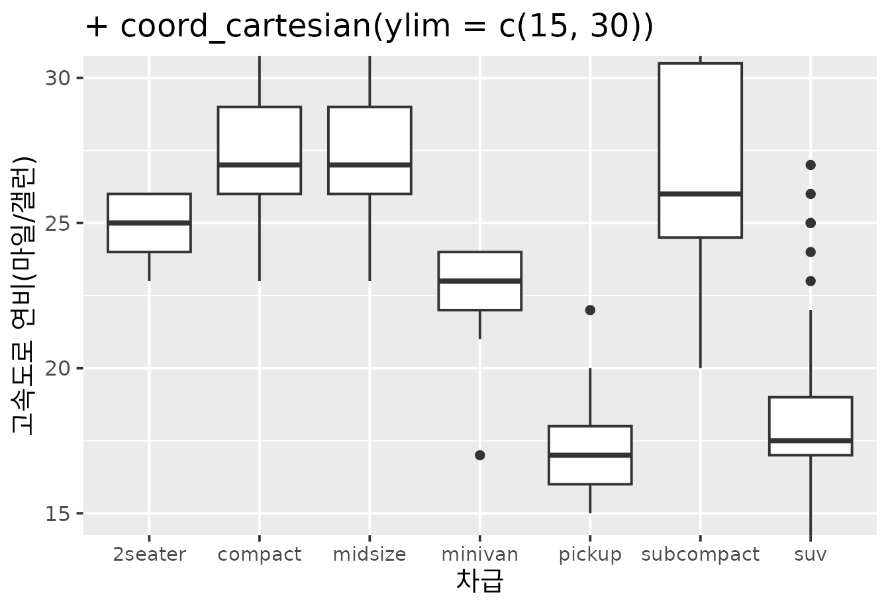
중앙값: layer_data()$middle
원본: midsize 27, suv 17.5
ylim(15, 30): 범위 밖 29행을 버린 뒤 다시 계산, midsize 26, suv 18
경고 “Removed 29 rows containing non-finite outside the scale range (stat_boxplot())”
coord_cartesian(): 계산은 그대로 두고 보이는 범위만, midsize 27, suv 17.5
정답은 B: 확대가 목적이면 coord_cartesian()
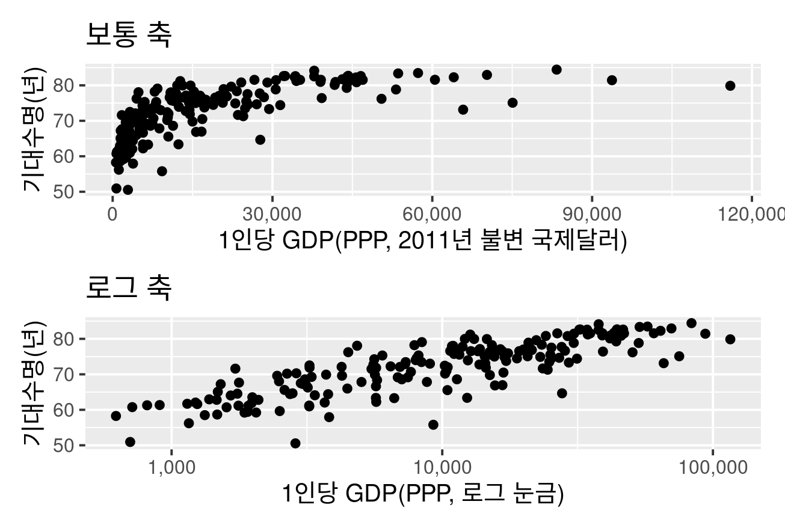
예측: 623 달러부터 115,940 달러까지, 보통 축에서 나라 대부분은?
2015년 인구 최대 중국(1,406,847,868명)과 최소 마셜제도(57,444명)는 24,491배. aes(size = population) 으로 그리면 두 점의 면적은 몇 배?
ggplot(gm_2015, aes(gdp_per_capita, life_expectancy,
size = population, colour = continent)) +
geom_point(alpha = 0.6) +
scale_x_log10()A 24,491배
B 약 156배
C 36배
크기 척도 scale_size() 는 값의 범위를 어떤 크기의 범위에 대응시키는가? 면적은 크기의 제곱
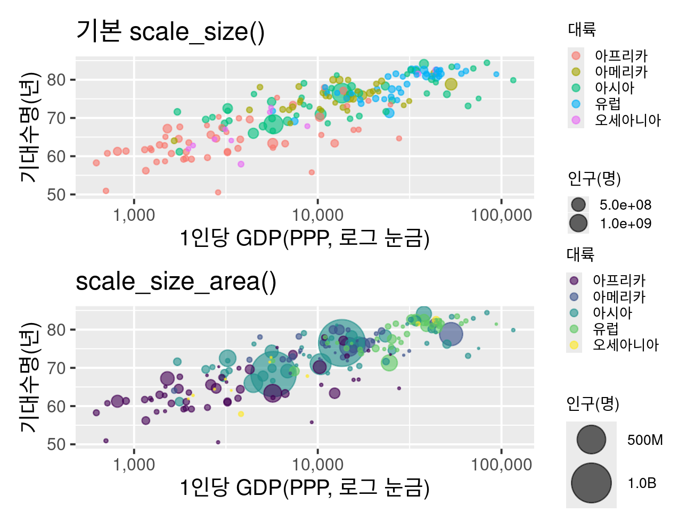
정답은 C
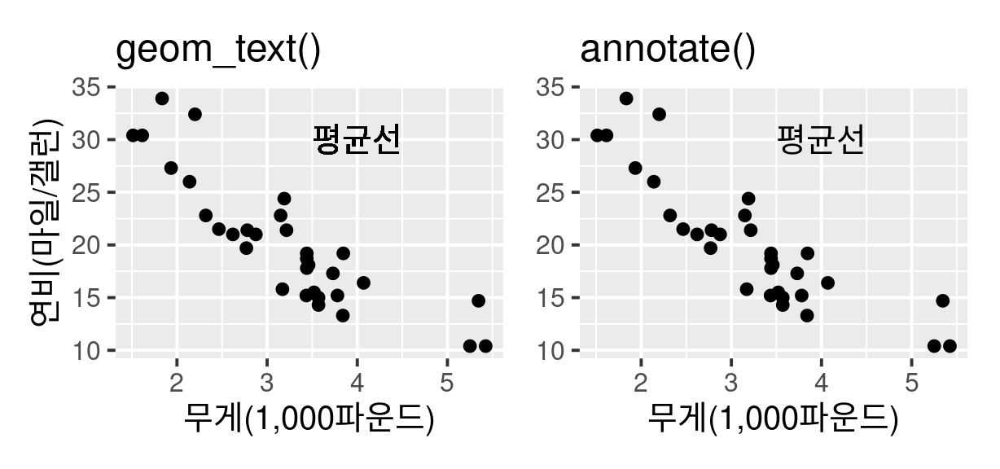
예측: 평균선 글자는 몇 번 그려질까
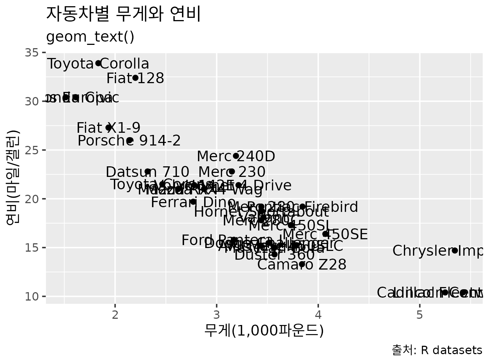
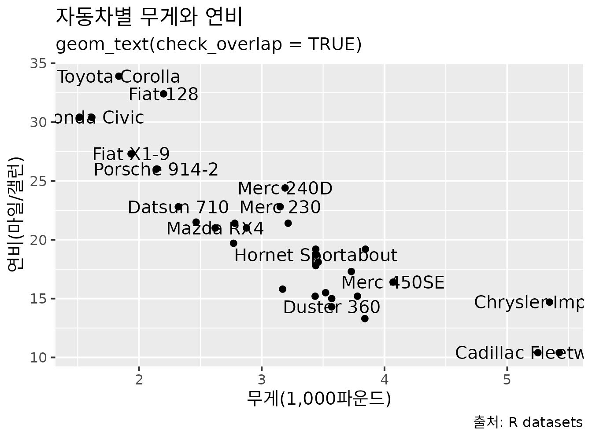
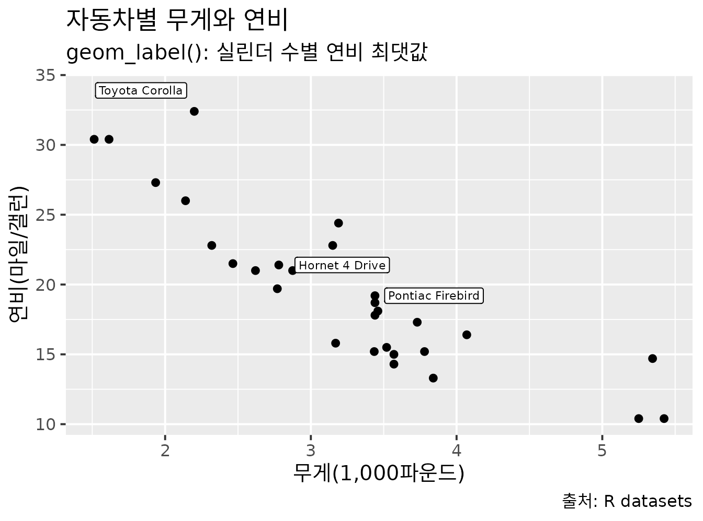
예측: 32대의 이름이 모두 읽힐까
같은 그림을 집단별 패널로 나누기
그림을 붙이고, 비자료 요소를 바꾸고, 파일로 저장한 뒤 다시 읽기
이 절에서
이 절이 답하는 질문: 패널 사이의 높이를 비교해도 되는가?
경제 지표 다섯 개를 scales = “free_y” 로 나눔. 두 패널의 선 높이로 “실업자 수가 개인저축률보다 크다”고 말해도 될까?
ggplot(economics_long, aes(date, value)) + geom_line() +
facet_wrap(~ variable, scales = "free_y")
# variable: pce, pop, psavert, uempmed, unemployA 된다: 같은 그림 안의 선
B 안 된다: 패널마다 y 척도와 단위가 다름
C 된다: free_y 가 지표를 같은 척도로 맞춤
패널마다 y 축의 눈금과 단위를 먼저 보기
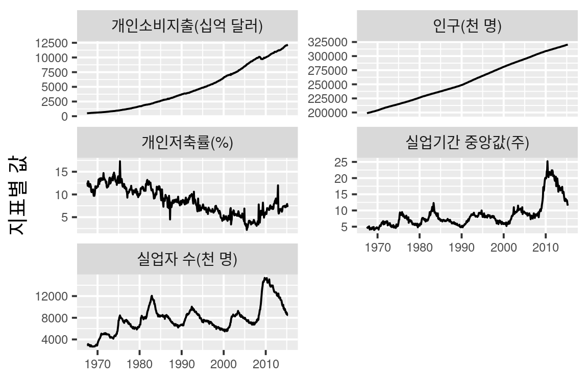
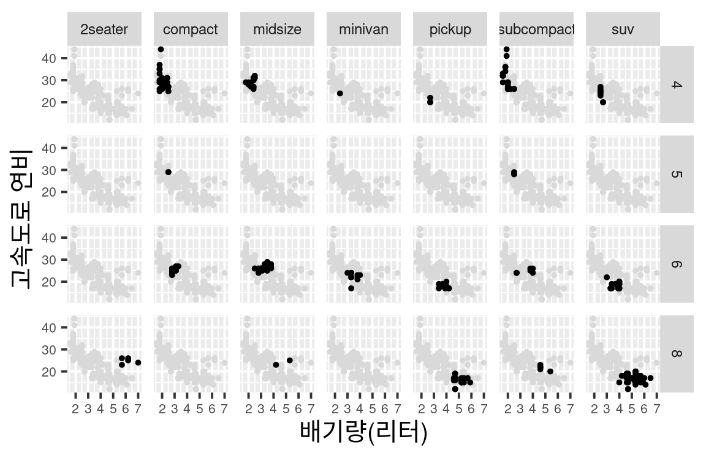
patchwork: 장치에 상태를 남기지 않는 배치
테마: 자료와 무관한 요소
p + theme(legend.position = "top")
p + theme(panel.grid = element_blank())
p + theme_grey(ink = "white", paper = "black")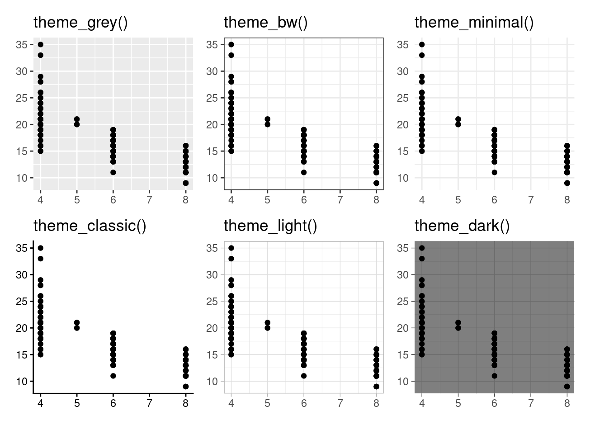
예측: 가로 6, 세로 4 인치, dpi = 150 이면 몇 픽셀?
쓰고 다시 읽어 확인: 11장의 순서
기본 그래픽: png() 의 크기 단위는 픽셀
12장의 대조를 그림에: 입력 자료와 레이어가 그린 값을 대조
AI 가 쓴 코드에도 사람이 쓴 코드에도 같은 절차
이 절에서
이 절이 답하는 질문: 이 그림이 그린 것은 무엇인가?
| 확인할 것 | 확인 방법 | 본 곳 |
|---|---|---|
| 그려진 행 수 | x 와 y 가 모두 있는 레이어 행 수를 기대 행 수와 | 5, 7.1 |
| 빠진 행의 이유 | 결측 수, 척도 범위, Removed 경고 | 7.1 |
| 계산한 통계량 | count, density, middle, ymin, ymax 를 따로 계산한 값과 | 5 |
| 위치 조정 | 막대 바닥이 0 인지, 쌓았다면 꼭대기가 합계인지 | 6 |
| 척도와 좌표 | 범위 밖 값을 버렸는지, 화면만 확대했는지 | 7.1 |
| 크기와 색 | 면적비, 로그 눈금 표기, 색이 나타내는 변수 | 7.2, 7.3 |
| 글자와 코드 | 제목, 축, 범례의 수치와 단위를 인수와 | 3.2, 9.2 |
| 필터와 설명 | 그림에 들어간 집단 수와 본문의 기준 | 9.4 |
| 저장과 재현 | 다시 읽은 파일 크기, jitter 시드 | 6.3, 8.4 |
| 그래픽 상태 | par() 설정을 되돌렸는지 | 3.3 |
AI 가 만든 코드에도 이전 판처럼 사람이 쓴 코드에도 같은 표: 출처로 정확성을 판단하지 않음
이전 판 강의노트의 정규분포 그림: 둘째 곡선의 정점 높이 0.282, 그림 글자는 “μ = 0, σ = 2”. 이 표기는 맞는가?
# 정규분포 평균=0, 분산=2
y <- mapply(dnorm, list(x, x, x), c(0, 0, 0), c(1, sqrt(2), sqrt(3)))
lines(x, y[,2], lty = 2, lwd = 2, col = "blue")
text(2.1, max(y[,2]),
expression(paste(mu == 0, "," ~~ sigma == 2)), # 수식 표현
adj = 0)A 맞음: σ = 2 이면 정점 0.282
B 틀림: 코드의 표준편차는 √2
C 틀림: 코드의 평균이 0 이 아님
정규분포의 정점 높이는 \(1 / (\sigma\sqrt{2\pi})\)
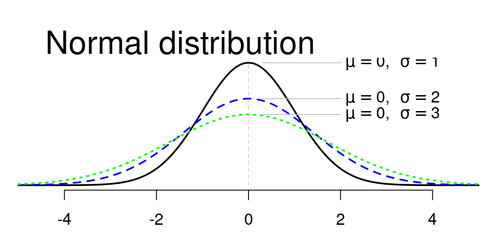
이전 판의 히스토그램: 제목과 인수
check_plot_rows <- function(p, expected, layer = 1) {
d <- layer_data(p, layer)
lab <- get_labs(p) # labs() 와 이름이 겹치지 않게
has_label <- function(x) !is.null(x) &&
length(x) == 1 && nzchar(as.character(x))
stopifnot(
"x와 y 열이 있어야 한다" = all(c("x", "y") %in% names(d)),
"그려진 행 수가 기대와 같아야 한다" =
sum(complete.cases(d[c("x", "y")])) == expected,
"x축 제목이 있어야 한다" = has_label(lab$x),
"y축 제목이 있어야 한다" = has_label(lab$y))
invisible(TRUE)
}틀린 기대값에서 멈추는지부터
p_ozone <- ggplot(airquality,
aes(Temp, Ozone)) + geom_point() +
labs(x = "일 최고 기온(화씨)", y = "오존 농도(ppb)")
tryCatch(check_plot_rows(p_ozone, nrow(airquality)),
error = \(e) conditionMessage(e))
[1] "그려진 행 수가 기대와 같아야 한다"
expected_ozone <- sum(complete.cases(
airquality[c("Temp", "Ozone")]))
c(입력행 = nrow(airquality), 완전한행 = expected_ozone)
입력행 완전한행
153 116
(check_plot_rows(p_ozone, expected_ozone))
[1] TRUE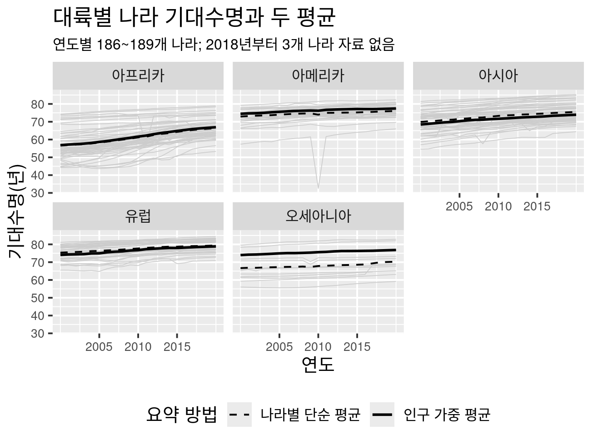
| 2020년 | 단순 | 인구 가중 |
|---|---|---|
| 아시아 | 75.5 | 73.9 |
| 아메리카 | 76.1 | 77.5 |
| 유럽 | 79.4 | 78.9 |
| 아프리카 | 66.4 | 66.9 |
| 오세아니아 | 70.3 | 76.8 |
AI 가 생성한 거품 그림 코드를 9.1 의 절차로 검증
7.3 에서 만든 기준 자료(189개 나라)와 나라별 대조
이 절에서
이 절이 답하는 질문: 오류 없이 그려진 그림은 명세대로 그려졌는가?
학생이 붙여 넣은 것: 네 파일마다 앞 5줄, 역할과 단위
2015년 자료로 거품 그림을 그리고 싶어. 나라 하나가 점 하나이고, x축은 1인당 GDP(로그 축), y축은 기대수명이야. 점 크기는 인구에 비례하게 하고, 색은 대륙으로 구분해 줘. 대륙은 아프리카, 아메리카, 아시아, 유럽, 오세아니아 다섯 개야. 코드 짜 줘.
AI 가 본 것: 파일마다 2000년 아프가니스탄 4행, 지역 표는 4개 나라
안 보인 것: 2015년 행, 지역 이름 22개 전체, 결측이 있는 나라
붙여 넣은 지역 표의 앞 5줄
"iso","country","region"
"AFG","Afghanistan","Southern Asia"
"ALB","Albania","Southern Europe"
"DZA","Algeria","Northern Africa"
"ASM","American Samoa","Polynesia Oceania"경고
과제에서 개인정보나 공개되지 않은 연구 자료는 원문을 보내지 않기: 열 이름과 가상 예시로 요청하고 실제 파일은 로컬에서 확인
# 생성: Claude Sonnet 5.5, 2026-10-16 (발췌, 정렬용 공백 줄임)
region <- region %>%
mutate(
continent = case_when(
str_detect(region, "Oceania|Australia|Melanesia|Micronesia|Polynesia") ~ "오세아니아",
str_detect(region, "Africa") ~ "아프리카",
str_detect(region, "America|Caribbean") ~ "아메리카",
str_detect(region, "Europe") ~ "유럽",
str_detect(region, "Asia") ~ "아시아",
TRUE ~ NA_character_
),
geo = str_to_lower(iso) # 다른 파일의 geo(소문자)와 맞추기
) %>%
select(geo, continent)응답이 짚은 것: 세부 지역을 대륙으로 직접 묶어야 함, 코드의 대소문자 차이, 이름이 아니라 코드로 결합, scale_size_area() 로 면적 비례
df <- pop %>%
filter(year == 2015) %>%
select(geo, name, population) %>%
left_join(gdp %>% filter(year == 2015) %>% select(geo, gdp_total), by = "geo") %>%
left_join(life %>% filter(year == 2015) %>% select(geo, life_expectancy), by = "geo") %>%
left_join(region, by = "geo") %>%
mutate(
gdp_per_capita = gdp_total / population, # 1인당 GDP
# (대륙 factor 줄 생략)
)
df <- df %>% drop_na(gdp_per_capita, life_expectancy, continent)
ggplot(df, aes(x = gdp_per_capita, y = life_expectancy,
size = population, fill = continent)) +
geom_point(shape = 21, color = "white", alpha = 0.8) +
# (scale_x_log10() 줄 생략)
scale_size_area(max_size = 20, # 면적이 인구에 비례AI 코드는 오류 없이 그림을 그림. 7.3 의 기준 자료처럼 2015년 189개 나라가 모두, 대륙별 54, 34, 50, 40, 11 개로 그려졌을까?
# AI 코드의 대륙 규칙과 결합 열 (10.2 에서 발췌)
str_detect(region, "Oceania|Australia|Melanesia|Micronesia|Polynesia") ~ "오세아니아",
str_detect(region, "America|Caribbean") ~ "아메리카",
geo = str_to_lower(iso) # 다른 파일의 geo(소문자)와 맞추기
check_plot_rows(ai_result$plot, nrow(ref_bubble_data)) # 기준 189행
count(ai_result$data, continent)A 그렇다: 189개, 대륙별 수도 같음
B 아니다: 정규식에 걸리지 않은 지역의 나라가 빠짐
C 아니다: 코드가 다른 나라가 빠져 188개
AI 가 본 것은 파일마다 앞 4행: 2015년 행도, 지역 이름 22개 전체도 못 봄
(check_plot_rows(ai_result$plot,
nrow(ref_bubble_data)))
[1] TRUE
count(ai_result$data, continent) |> pull(n)
[1] 54 34 50 40 11
nrow(anti_join(ref_bubble_data,
ai_result$data, by = "geo"))
[1] 0
ai_layer <- layer_data(ai_result$plot)
c(면적비 = (max(ai_layer$size) /
min(ai_layer$size))^2,
인구비 = max(ai_result$data$population) /
min(ai_result$data$population))
면적비 인구비
24490.77 24490.77 | 검증 항목 | 결과 |
|---|---|
| 연도와 점의 수 | 2015년, 189개: 기준과 같음 |
| 대륙 대응 | 22개 지역이 모두 다섯 대륙에, 54, 34, 50, 40, 11 |
| 나라별 값 | 인구, 1인당 GDP, 기대수명, 대륙이 나라 코드별로 모두 일치 |
| x 값 | 한국 34,178 달러, layer_data() 의 x 는 그 log10 값 4.534 |
| 크기 비례 | 면적비 = 인구비 24,491 |
| 빠진 나라 | 8개: 기대수명 없음, 교황청은 hos 와 VAT 로 결합도 안 됨 |
| 크기 범례 | 열쇠의 원이 보이지 않음: 그림을 보고 찾음 (다음 슬라이드) |
정답은 A: 나라와 수치는 기준과 같음, 빠진 나라와 이유는 제출물에 적기
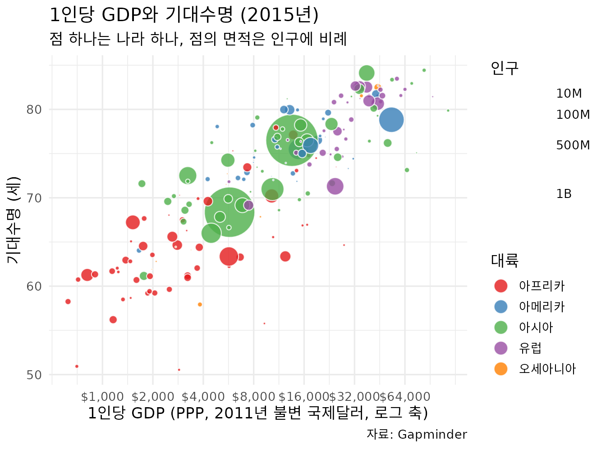
예측: 크기 범례의 원 네 개가 보이는가
| 확인 항목 | 실제 응답과 실행 결과 | 사람이 확인할 부분 |
|---|---|---|
| 코드 대소문자 | 소문자로 맞추어 결합 | 예외 코드와 결합하지 못한 나라 |
| 지역 전체 | 이 자료의 지역은 모두 다섯 대륙에 | 새 지역명이 들어오면 다시 대조 |
| 결측과 제외 | 결측을 출력한 뒤 drop_na() 로 제외 | 제외한 나라와 이유를 제출물에 |
| 크기 범례 | 흰 테두리를 고정해 원이 안 보임 | 범례를 그림에서 직접, override.aes |
| 지역명 조회 안내 | 이미 지운 region 열을 조회해 오류 | 원본 지역 표를 따로 보관 |
| 점 그리는 순서 | 큰 점부터 정렬은 설명에만 | 작은 점이 가려지는지 그림에서 |
응답이 안내한 지역명 확인 명령을 실행하면
연습 (강의노트 10.5)
이 결과는 이 파일과 이 응답에 대한 확인: 다른 응답에도 같은 절차
기본 그래픽
ggplot2 의 문법
계산한 값과 척도
AI와 함께
다음 시간: 그림으로 확인한 자료로 기초 통계 분석 (14장)